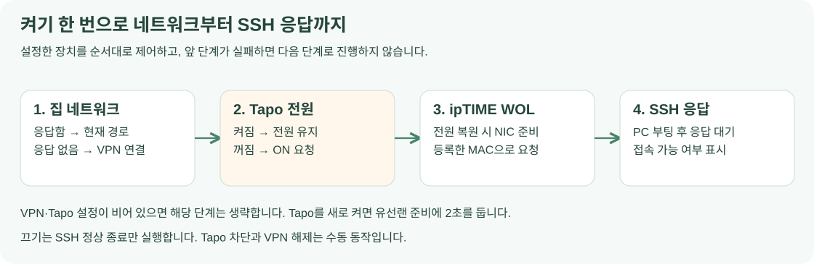

구성 목적
외부에서 집 PC의 전원과 SSH를 제어하는 구성입니다. 거실의 ASUS ZenWiFi XT9가 인터넷 회선과 WireGuard 서버를 담당하고, 방의 ipTIME A3004NS-M이 무선 브리지로 연결됩니다. PC의 유선 NIC는 ipTIME의 LAN 포트에 연결하며 Tapo P110이 PC에 전원을 공급합니다.
PC Power는 집 Wi-Fi 또는 WireGuard로 공유기·플러그·PC에 접속합니다. Tapo로 전원 공급 상태를 맞추고, ipTIME의 WOL 기능으로 PC를 깨운 뒤 SSH로 접속합니다.

ipTIME 무선 브리지 구성
ipTIME은 ASUS의 Wi-Fi에 접속하고 LAN 케이블로 연결된 PC의 통신을 중계합니다. 방까지 긴 LAN 케이블을 설치하거나 AiMesh 장비를 추가 구매하지 않고 기존 장비를 활용합니다. A3004NS-M의 AP/Extender 무선 확장 기능을 사용합니다. ipTIME 제품 안내
WOL 대상은 PC의 유선 NIC인 enp42s0입니다. 같은 PC의 Wi-Fi와 유선 NIC는 MAC 주소가 다릅니다. 앱에는 매직 패킷을 받을 유선 NIC의 MAC을 저장하고, SSH 접속 주소는 PC에서 실제로 연결할 수 있는 주소로 지정합니다.
BIOS와 유선 NIC의 WOL 설정
BIOS에서 LAN·PCIe 장치의 깨우기를 허용합니다. Ubuntu에서도 Realtek 유선 NIC가 매직 패킷을 감지하도록 설정합니다.
sudo ethtool enp42s0
Supports Wake-on은 지원 방식, Wake-on은 현재 적용된 방식입니다. 매직 패킷은 g, 비활성화는 d로 표시합니다. 다음 명령은 현재 NIC의 깨우기 방식을 매직 패킷으로 지정합니다.
sudo ethtool -s enp42s0 wol g
-s는 장치 설정 변경이고 wol g가 매직 패킷 깨우기 설정입니다. 전원 공급을 Tapo로 켜는 것과 PC를 부팅시키는 WOL은 별도 단계입니다. 전원을 공급한 뒤 NIC가 준비되면 매직 패킷을 보냅니다.
NetworkManager의 WOL 설정 저장
NetworkManager의 유선 연결 프로필에도 WOL 설정을 저장해 연결이 활성화될 때 NIC에 적용합니다. 적용 중인 프로필 이름은 다음 명령으로 읽습니다.
nmcli -g GENERAL.CONNECTION device show enp42s0
이 환경의 프로필 이름은 Wired connection 1입니다. enp42s0가 장치 이름이고, Wired connection 1은 그 장치에 적용하는 연결 설정 묶음의 이름입니다.
sudo nmcli connection modify "Wired connection 1" 802-3-ethernet.wake-on-lan magic
connection modify로 저장된 프로필을 수정하고 802-3-ethernet.wake-on-lan magic으로 깨우기 방식을 지정합니다. 공백이 있는 프로필 이름은 따옴표로 감쌉니다. NetworkManager 유선 설정
VPN 접속을 위한 ipTIME 게이트웨이 설정
ipTIME의 관리 IP와 서브넷을 집 LAN에 맞추고, 허브/AP 모드 내부 게이트웨이를 활성화해 ASUS의 LAN 주소를 지정합니다. VPN 휴대폰은 집 LAN과 다른 대역을 사용하므로 ipTIME 자신의 관리 웹 서버가 보내는 응답에도 이 경로가 필요합니다. ipTIME은 직접 연결된 대역 밖의 응답을 ASUS에 맡기고, ASUS가 WireGuard 피어로 전달합니다.
PC의 프레임을 중계하는 브리지 기능과 ipTIME 자신의 웹 서버가 응답하는 기능은 따로 동작합니다. 내부 게이트웨이는 관리 웹 서버의 응답 경로를 만드는 설정입니다. DNS도 관리 화면의 입력 조건에 맞춰 지정하며, IP로 접속할 때의 응답 경로는 게이트웨이가 담당합니다.
VPN과 로컬 WOL 패킷의 경로
WireGuard는 IP 패킷을 전달하며 집 LAN의 Ethernet 브로드캐스트 영역을 그대로 확장하지 않습니다. 앱은 VPN으로 ipTIME의 관리 IP에 WOL을 요청하고, PC와 유선으로 연결된 ipTIME이 LAN 안에서 매직 패킷을 생성합니다.
DHCP 예약은 장치에 같은 IP를 할당하는 설정이고 정적 ARP는 IP에 대응하는 MAC 주소를 지정하는 설정입니다. 이 설정이 VPN에서 들어온 패킷을 LAN 브로드캐스트로 바꾸어 주지는 않습니다. ipTIME 관리자 화면에 정적 ARP를 직접 등록하는 기능이 없어, 이 구성에서는 관리자 화면의 WOL 요청을 앱에서 호출합니다.
Tapo P110 연결
Tapo 앱에서 P110의 Wi-Fi 등록을 마친 뒤 PC Power에 플러그의 로컬 IP와 TP-Link 계정을 저장합니다. PC Power는 그 IP의 로컬 API로 인증하고 전원·소비전력을 읽습니다. 비밀번호는 앱의 보안 저장소에 보관합니다.
플러그 전원 켜기 후에는 유선 NIC가 준비될 시간을 두고 WOL을 요청합니다. PC를 끌 때는 SSH 정상 종료만 실행하며 Tapo의 전원 공급은 유지합니다. 플러그를 완전히 끄려면 사용자가 Tapo 아이콘에서 직접 차단합니다.
자동 접속과 PC 켜기
공식 WireGuard 앱에 서버·키·터널을 설정하고 PC Power에는 그 터널 이름을 저장합니다. 집 공유기에 접속할 수 있으면 현재 연결을 사용하고, 접속할 수 없으면 Android에서 공식 앱에 터널 연결을 요청합니다. VPN 감지와 공유기 응답이 확인된 뒤 Tapo·WOL 순서로 진행합니다.

VPN 인터페이스가 활성화됐다는 표시와 집 장비까지 통신되는지는 구분합니다. 앱은 실제 공유기 응답을 확인하고 다음 단계로 넘어갑니다. VPN의 키와 터널은 WireGuard 앱이 관리하며, PC Power의 종료나 PC 정상 종료에 맞춰 VPN을 자동 해제하지 않습니다.
현재 화면과 사용 방법은 프로젝트 소개, IPC와 장치별 통신 처리는 앱 내부 동작에서 확인할 수 있습니다.